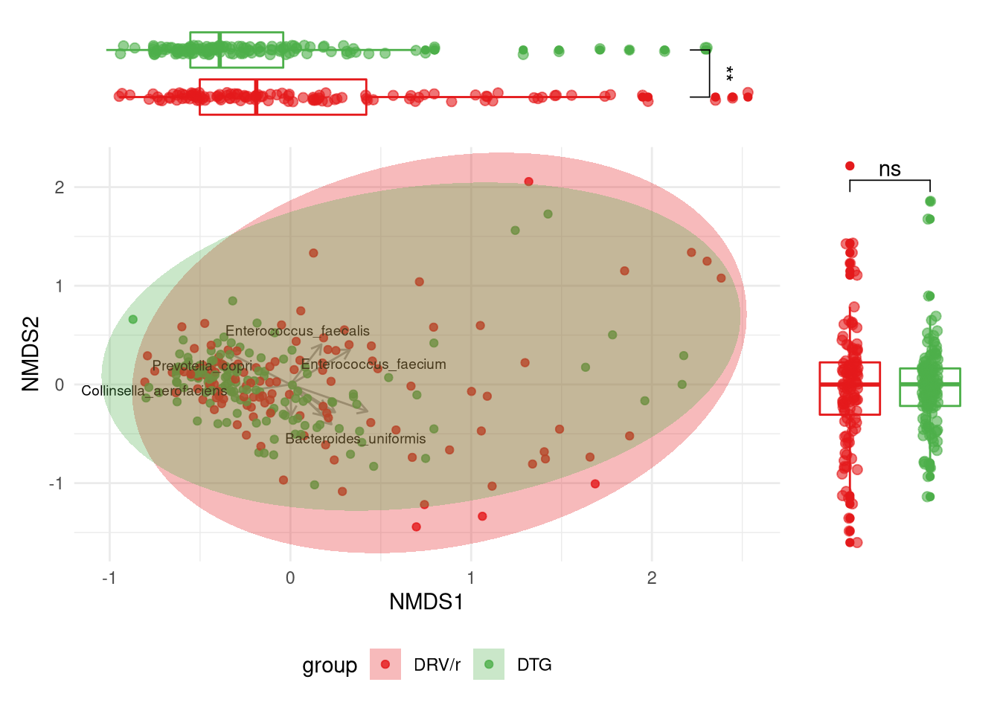
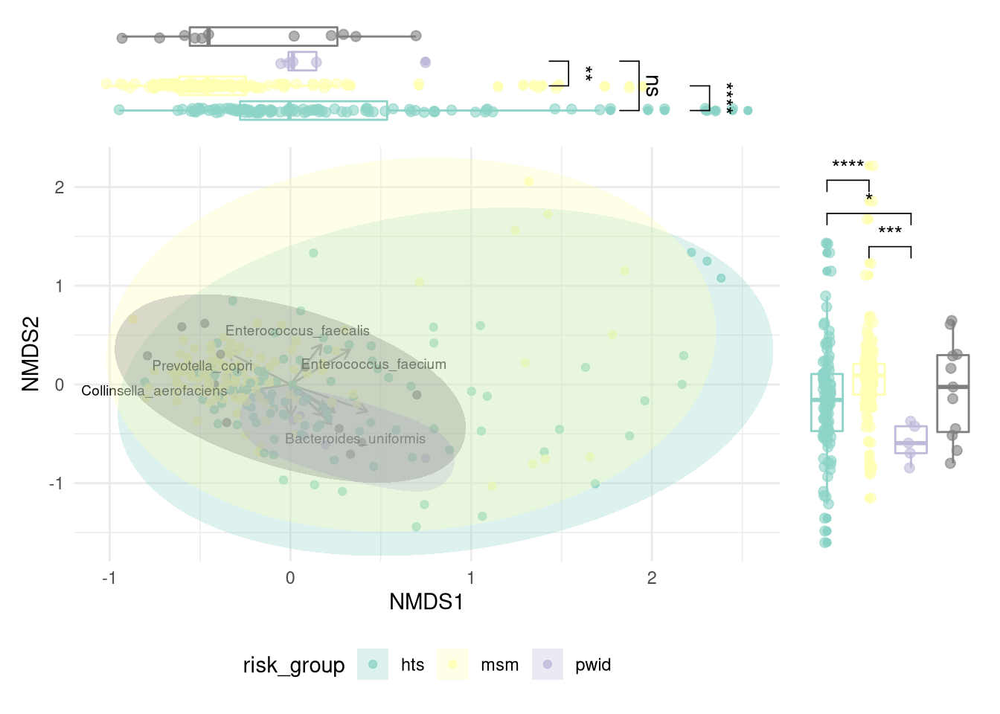
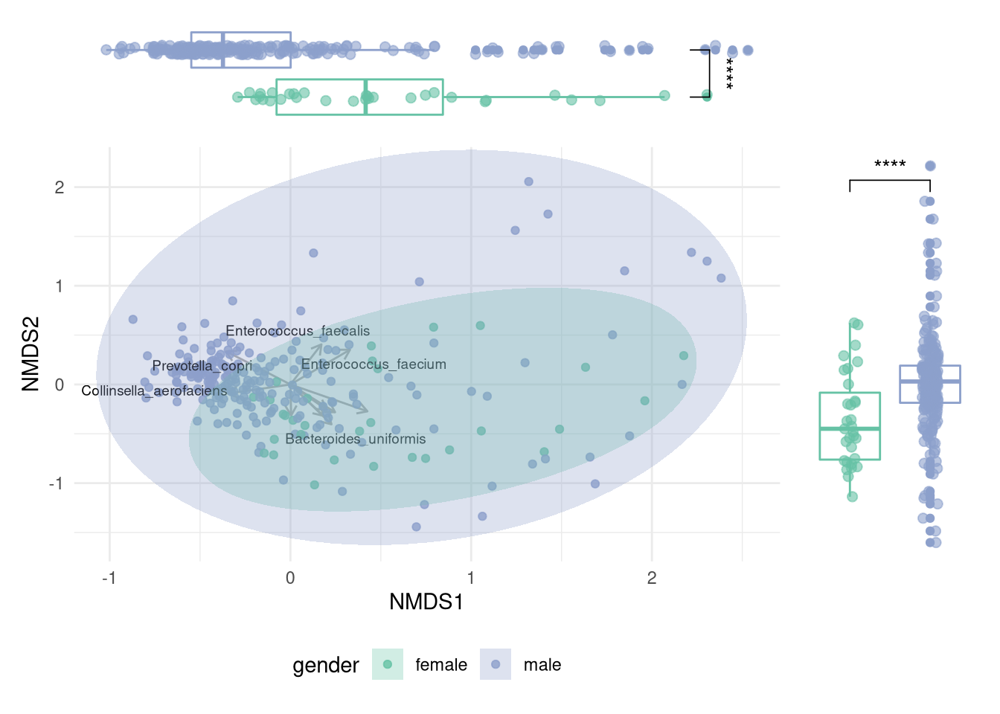
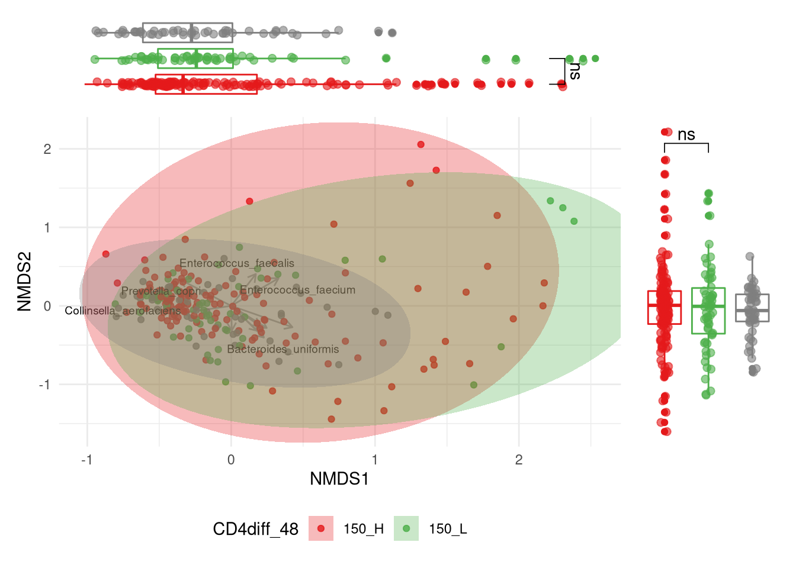
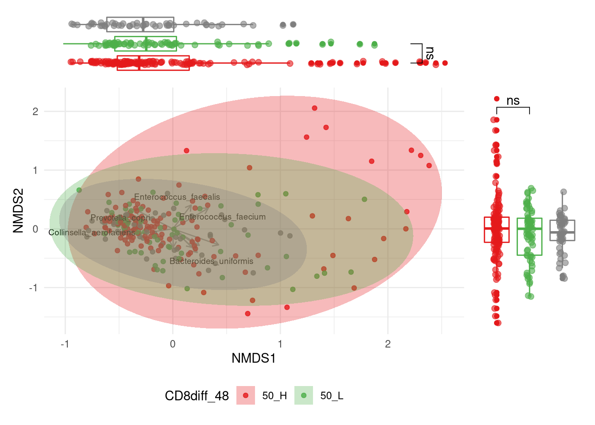
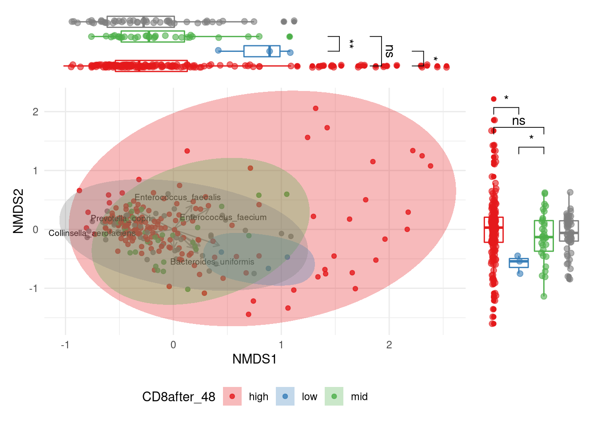
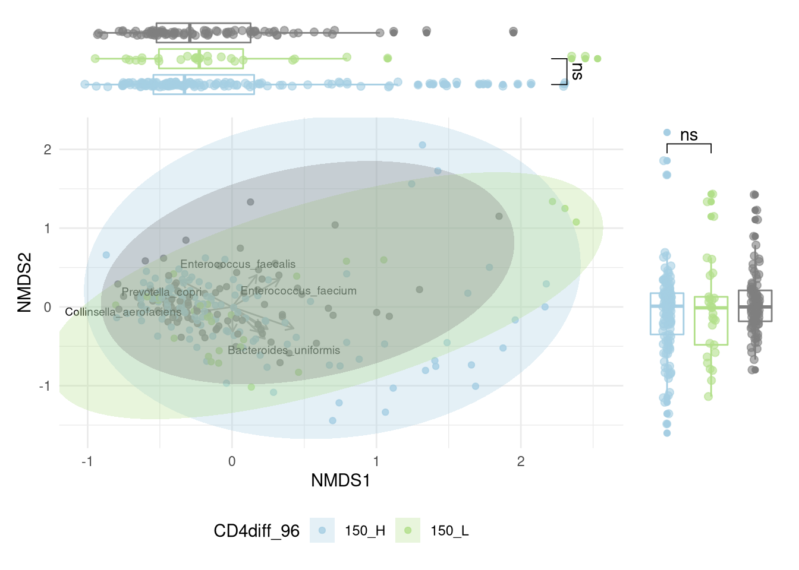
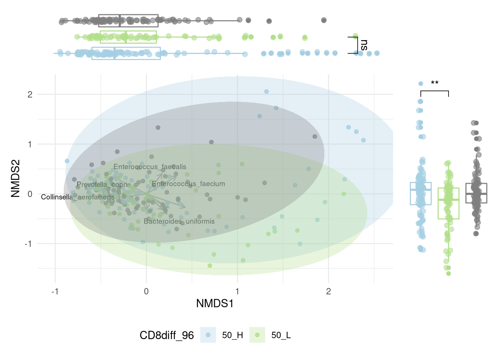
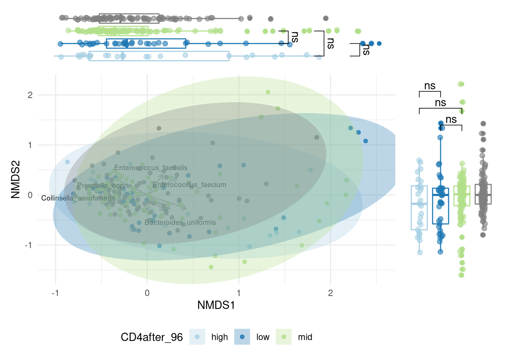
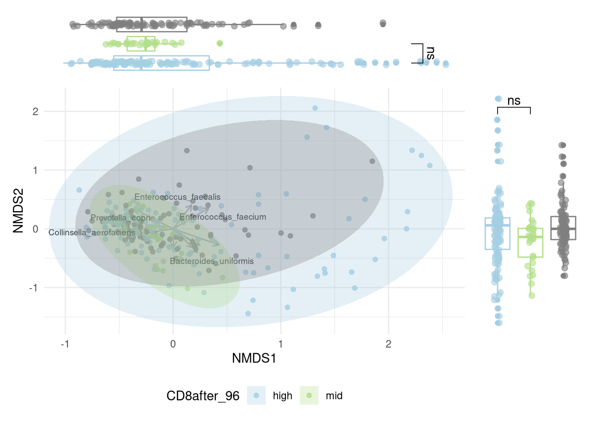

Beta Diversity and NMDS
Last updated: 2022-03-29
Checks: 6 1
Knit directory: advanz4/
This reproducible R Markdown analysis was created with workflowr (version 1.7.0). The Checks tab describes the reproducibility checks that were applied when the results were created. The Past versions tab lists the development history.
The R Markdown file has unstaged changes. To know which version of the R Markdown file created these results, you’ll want to first commit it to the Git repo. If you’re still working on the analysis, you can ignore this warning. When you’re finished, you can run wflow_publish to commit the R Markdown file and build the HTML.
Great job! The global environment was empty. Objects defined in the global environment can affect the analysis in your R Markdown file in unknown ways. For reproduciblity it’s best to always run the code in an empty environment.
The command set.seed(20211203) was run prior to running the code in the R Markdown file. Setting a seed ensures that any results that rely on randomness, e.g. subsampling or permutations, are reproducible.
Great job! Recording the operating system, R version, and package versions is critical for reproducibility.
Nice! There were no cached chunks for this analysis, so you can be confident that you successfully produced the results during this run.
Great job! Using relative paths to the files within your workflowr project makes it easier to run your code on other machines.
Great! You are using Git for version control. Tracking code development and connecting the code version to the results is critical for reproducibility.
The results in this page were generated with repository version d0aa42c. See the Past versions tab to see a history of the changes made to the R Markdown and HTML files.
Note that you need to be careful to ensure that all relevant files for the analysis have been committed to Git prior to generating the results (you can use wflow_publish or wflow_git_commit). workflowr only checks the R Markdown file, but you know if there are other scripts or data files that it depends on. Below is the status of the Git repository when the results were generated:
Ignored files:
Ignored: .RData
Ignored: .Rhistory
Ignored: .Rproj.user/
Ignored: data/mre.rds
Untracked files:
Untracked: Metadata/MetadataManagement/Resultats Real Time.xlsx
Untracked: analysis/figure/
Unstaged changes:
Modified: advanz4.Rproj
Modified: analysis/200_ADVANZ4_Report.Rmd
Modified: analysis/310_IGC_analysis.Rmd
Modified: analysis/320_Beta_Diversity.Rmd
Modified: output/mre_data/CatalogMapping/IGC/lmm/lmm_time_point_by_group.pdf
Note that any generated files, e.g. HTML, png, CSS, etc., are not included in this status report because it is ok for generated content to have uncommitted changes.
These are the previous versions of the repository in which changes were made to the R Markdown (analysis/320_Beta_Diversity.Rmd) and HTML (docs/320_Beta_Diversity.html) files. If you’ve configured a remote Git repository (see ?wflow_git_remote), click on the hyperlinks in the table below to view the files as they were in that past version.
| File | Version | Author | Date | Message |
|---|---|---|---|---|
| Rmd | eba3a18 | Marc Noguera-Julian | 2022-03-29 | comments for Carlos |
| Rmd | e253850 | cblazquez | 2022-03-29 | worked on NMDS |
| html | e253850 | cblazquez | 2022-03-29 | worked on NMDS |
| Rmd | c51687a | cblazquez | 2022-03-28 | fixed workflowrs and gene richness issues |
| html | c51687a | cblazquez | 2022-03-28 | fixed workflowrs and gene richness issues |
| Rmd | 11c1e7d | cblazquez | 2022-03-28 | Code reorganized towards new structure |
R Markdown
This is an R Markdown document. Markdown is a simple formatting syntax for authoring HTML, PDF, and MS Word documents. For more details on using R Markdown see http://rmarkdown.rstudio.com.
When you click the Knit button a document will be generated that includes both content as well as the output of any embedded R code chunks within the document. You can embed an R code chunk like this:
suggested package selbal vsuggested package DataExplorer vsuggested package lme4 vsuggested package merTools vIncluding Plots
You can also embed plots, for example:
myPath<-here::here()
setwd(myPath)
mymre<-readRDS("data/mre.rds")
metadata <- metar::get_meta(mymre) %>% as.data.frame()
myphyloseq <- get_phyloseq(mymre, type = "metaphlan")
CategoricalVariablesDF <- get_metadata(mymre)@categorical_vals
NumericalVariablesDF <- get_metadata(mymre)@numeric_vals
LongitudinalVariablesDF <- get_metadata(mymre)@longitudinal_valsgetAbundances<-function(phyloseq, level){
collapsedPhyloseq<- phyloseq::tax_glom(phyloseq, level)
OtuTable<- phyloseq::otu_table(collapsedPhyloseq) %>%
magrittr::set_rownames(as.character(phyloseq::tax_table(collapsedPhyloseq)[,level])) %>%
as.data.frame()
return(OtuTable)
}
myAbundanceDF<- getAbundances(myphyloseq, "Species")
Top50<- myAbundanceDF %>%
mutate(sum=rowSums(.)) %>%
arrange(desc(sum)) %>%
dplyr::slice(1:50) %>%
rownames()
myNMDS <- myAbundanceDF %>%
# dplyr::filter(row.names(.) %in% Top50) %>%
t() %>%
as.data.frame() %>%
metaMDS(.,distance="bray",trymax=100,
k = nrow(unique(metadata[,CategoricalVariablesDF$CategoricalVariable[1]]))) %>%
pluck("points") %>%
as.data.frame()
# NMDS = data.frame(NMDS1 = dim_NMDS$points[,1], NMDS2 = dim_NMDS$points[,2])
BiPlotCoords<- envfit(myNMDS, t(myAbundanceDF), perm=999)
BiPlotCoordsDF <- c("MDS1","MDS2","r","pvals") %>%
set_names() %>%
map_dfr(., ~ {
if(.x %in% c("MDS1","MDS2")){
BiPlotCoords$vectors$arrows[,.x] %>%
as.numeric()
} else{
BiPlotCoords$vectors %>%
pluck(.x) %>%
as.numeric()
}
}) %>%
as.data.frame() %>%
set_names(nm=c("NMDS1","NMDS2","r","p")) %>%
dplyr::mutate(Dim1 = NMDS1*sqrt(r),
Dim2 = NMDS2*sqrt(r),
species = rownames(myAbundanceDF)) %>%
dplyr::filter(species %in% Top50)
myBrayDistMat <-vegdist(wisconsin(sqrt(t(myAbundanceDF))))NMDS by Treatment group
One of the variables: CD4diff_96 has only one level. That means all patients in the study had an increase of CD4 counts higher than 50 cells/ml between weeks 96 and 0. As this variable only has one level it will cause the following code to break (as it performs conrast analysis). Hence, it will be removed from the following analysis. However, we’ll look at the distribution of the CD4 increases as a distribution:
metadata %>%
dplyr::filter(time_point %in% c(0,48),
!is.na(CD4diff_96)) %>%
dplyr::select(record_id, time_point, CD4) %>%
dplyr::group_by(record_id) %>%
dplyr::summarise(dif = diff(CD4)) %>%
ggplot(., aes(x= dif)) +
geom_density()`summarise()` has grouped output by 'record_id'. You can override using the
`.groups` argument.Warning: Removed 1 rows containing non-finite values (stat_density).
long_var<-LongitudinalVariablesDF$LongitudinalVariable[1]
CategoricalVariablesDF <- CategoricalVariablesDF %>%
filter(!CategoricalVariable == "CD4diff_96")
cat_var <- CategoricalVariablesDF$CategoricalVariable
mymre@metadata@categorical_vals <- as_tibble(CategoricalVariablesDF)
# link_var <- LongitudinalVariablesDF$LinkVariable[1]
# id_var <- "SampleID"
# myPal<-RColorBrewer::brewer.pal(name = CategoricalVariablesDF$PaletteName[1],
# n=length(unique(metadata[,cat_var])))
# BiPlotCoordsDF<-BiPlotCoordsDF %>%
# mutate(Dim1s = Dim1*3,
# Dim2s = Dim2*3)
#
#
# myNMDS_DF <- myNMDS %>%
# rownames_to_column(var = id_var) %>%
# dplyr::full_join(., metadata, by =id_var) %>%
# dplyr::select(SampleID = id_var,
# NMDS1 = MDS1,
# NMDS2 = MDS2,
# linkVar = !!sym(link_var),
# catVar = !!sym(cat_var),
# LongVar = long_var)
#
#
# myXmin<-min(myNMDS$MDS1)
# # +(max(dim_NMDS$points[,1])-min(dim_NMDS$points[,1]))/20
# myYmin<-max(myNMDS$MDS2)-(max(myNMDS$MDS1)-min(myNMDS$MDS1))
#
#
#
#
# myAdonis<- adonis(myBrayDistMat~ catVar, data = myNMDS_DF) %>%
# pluck("aov.tab") %>%
# as.data.frame() %>%
# slice(1L) %>%
# magrittr::set_rownames(cat_var)
#
#
# myNMDSplot<-ggplot(myNMDS_DF, aes(x=NMDS1, y=NMDS2)) +
# geom_point() +
# theme_bw()+
# theme(panel.border=element_blank(),
# panel.grid.major=element_blank(),
# panel.grid.minor=element_blank(),
#
# axis.line=element_line(colour="black"),
# axis.text.x=element_text(size=11),
# axis.text.y=element_text(size=11),
# axis.title.x=element_text(size=11),
# axis.title.y=element_text(size=11),
#
# legend.text=element_text(size=11,face="italic"),
# legend.title=element_text(size=11))+
#
# ggtitle(expression(atop("Species composition",atop(italic("all samples"))))) +
# theme(plot.title=element_text(lineheight=1,face="bold",size=13))+
# coord_fixed()+
# labs(fill = cat_var, color=cat_var, shape = long_var)
#
#
#
#
# myNMDSBiplot<-ggplot(myNMDS_DF, aes(x=NMDS1, y=NMDS2)) +
# geom_point(aes(colour=catVar, shape = as.character(LongVar))) +
# scale_colour_manual(values = myPal, labels = c("DGT", "DRV/r")) +
# scale_fill_manual(values=myPal, labels = c("DGT", "DRV/r"))+
# theme_bw()+
# theme(panel.border=element_blank(),
# panel.grid.major=element_blank(),
# panel.grid.minor=element_blank(),
#
# axis.line=element_line(colour="black"),
# axis.text.x=element_text(size=11),
# axis.text.y=element_text(size=11),
# axis.title.x=element_text(size=11),
# axis.title.y=element_text(size=11),
#
# legend.text=element_text(size=11,face="italic"),
# legend.title=element_text(size=11))+
#
# ggtitle(expression(atop("Species composition",atop(italic("all samples"))))) +
# theme(plot.title=element_text(lineheight=1,face="bold",size=13))+
# stat_ellipse(geom="polygon",
# alpha=0.15,color="black",
# aes(fill=catVar),level=0.95)+
# # scale_size_manual(values = c(1:length(unique(myNMDS_DF[,"LongVar"])))/1.5) +
# geom_segment(data=BiPlotCoordsDF,aes(x=0,xend=Dim1s,y=0,yend=Dim2s),
# arrow = arrow(length = unit(0.2,"cm")),colour="darkgrey")+
# geom_text_repel(data=BiPlotCoordsDF,aes(Dim1s,Dim2s,label=species),
# size=2.5, box.padding = unit(0.25, "lines"),
# segment.colour="black",
# segment.alpha=0.5,
# segment.size=0.10)+
# coord_fixed()+
# labs(fill = cat_var, color=cat_var, shape = long_var) +
# annotation_custom(gridExtra::tableGrob(round(myAdonis,3),
# theme = ttheme_default(base_size = 8)),ymin = 3.5, xmin=2.4)
# When we look at the most simple ordination before colouring by categorical variables, we see no clear separated clusters between samples. They all appear to be mostly concentrated in one big cluster that randomly spreads in the positive direction for both NMDS components.
mymre <- metar::metaphlan_nmds(mymre, tax_level = "Species",top_n = 50, save_files = F)
mymre@taxa@metaphlan@nmds$Species$top_50$categorical %>%
discard(., names(.) == "record_id")$group
$risk_group
$center
$gender
$ethnic_group
$CD4diff_48
$CD8diff_48
$CD4after_48
$CD8after_48
$CD8diff_96
$CD4after_96
$CD8after_96
$time_point
$clusterIn a more formal analysis, the silhouette coefficient was tested for different number of clusters. This analysis found the biggest coefficient was found for n=1 clustrs, with massive drops between 2-3 and 5-6.
myBrayDistMat <- phyloseq::otu_table(myphyloseq) %>%
t() %>%
sqrt() %>%
vegan::wisconsin() %>%
vegan::vegdist()
c(1:11) %>%
set_names() %>%
map_df(., ~{
cluster::pam(myBrayDistMat, k = .x) %>%
pluck("silinfo") %>%
pluck("avg.width")
}) %>%
t() %>%
as_data_frame() %>%
rownames_to_column(var="clusters") %>%
set_names(c("clusters", "coefficient")) %>%
ggplot(., aes(x=as.numeric(clusters), y=coefficient, group=1)) +
geom_point() +
geom_line() +
scale_x_continuous(breaks=c(1:10)) +
theme_bw() +
theme(panel.grid.minor = element_blank()) +
labs(title = "Silhouette coefficient by number of clusters",
x="nº Clusters", y = "Silhouette coefficient")
In the same fashion, when we start identifying samples by group and Timepoint, we see no clear separation, although samples from group 1 (+DGT) group appear to be more clustered together than group 2 (DRV+RLT), which show a more diffuse “central” cluster and are more dispersed. When looking at weight of the variables, the concentric spread of the arrows can be split in two sides, one more enriched in Prevotella and another in bacteroides, which spread mostly around the 2nd component of the NMDS.
However, the Adonis test found the variable group to have a significant effect over sample distances (p<0.001), although it only accounted for a small portion of the variance
myNMDSBiplot
sessionInfo()R version 4.0.2 (2020-06-22)
Platform: x86_64-w64-mingw32/x64 (64-bit)
Running under: Windows 10 x64 (build 22000)
Matrix products: default
locale:
[1] LC_COLLATE=Spanish_Spain.1252 LC_CTYPE=Spanish_Spain.1252
[3] LC_MONETARY=Spanish_Spain.1252 LC_NUMERIC=C
[5] LC_TIME=Spanish_Spain.1252
attached base packages:
[1] stats graphics grDevices utils datasets methods base
other attached packages:
[1] gridExtra_2.3 cluster_2.1.0 ggrepel_0.9.1 vegan_2.5-7
[5] lattice_0.20-41 permute_0.9-7 forcats_0.5.1 stringr_1.4.0
[9] dplyr_1.0.8 purrr_0.3.4 readr_2.0.1 tidyr_1.2.0
[13] tibble_3.1.6 ggplot2_3.3.5 tidyverse_1.3.1 phyloseq_1.34.0
[17] metar_0.1.5
loaded via a namespace (and not attached):
[1] utf8_1.2.2 tidyselect_1.1.2
[3] lme4_1.1-27.1 htmlwidgets_1.5.4
[5] grid_4.0.2 gmp_0.6-2
[7] munsell_0.5.0 codetools_0.2-16
[9] effectsize_0.4.5 miniUI_0.1.1.1
[11] withr_2.5.0 colorspace_2.0-2
[13] Biobase_2.50.0 logger_0.2.2
[15] highr_0.9 knitr_1.38
[17] rstudioapi_0.13 stats4_4.0.2
[19] ipmisc_6.0.2 ggsignif_0.6.3
[21] labeling_0.4.2 emmeans_1.7.1-1
[23] git2r_0.28.0 polyclip_1.10-0
[25] farver_2.1.0 datawizard_0.2.0.1
[27] rhdf5_2.34.0 rprojroot_2.0.2
[29] coda_0.19-4 vctrs_0.3.8
[31] generics_0.1.2 xfun_0.30
[33] BWStest_0.2.2 R6_2.5.1
[35] arm_1.12-2 BayesFactor_0.9.12-4.2
[37] rhdf5filters_1.2.1 cachem_1.0.1
[39] reshape_0.8.8 assertthat_0.2.1
[41] promises_1.2.0.1 networkD3_0.4
[43] scales_1.1.1 ggExtra_0.10.0
[45] merTools_0.5.2 gtable_0.3.0
[47] multcompView_0.1-8 workflowr_1.7.0
[49] rlang_1.0.2 MatrixModels_0.5-0
[51] zeallot_0.1.0 PMCMRplus_1.9.0
[53] splines_4.0.2 rstatix_0.7.0
[55] broom_0.7.12 yaml_2.3.5
[57] reshape2_1.4.4 abind_1.4-5
[59] modelr_0.1.8 backports_1.4.1
[61] httpuv_1.6.3 tools_4.0.2
[63] ellipsis_0.3.2 jquerylib_0.1.4
[65] biomformat_1.18.0 selbal_0.1.0
[67] RColorBrewer_1.1-2 BiocGenerics_0.36.1
[69] WRS2_1.1-3 Rcpp_1.0.7
[71] plyr_1.8.6 zlibbioc_1.36.0
[73] ggpubr_0.4.0 pbapply_1.5-0
[75] correlation_0.7.0 S4Vectors_0.28.1
[77] haven_2.3.1 fs_1.5.0
[79] here_1.0.1 DataExplorer_0.8.2
[81] magrittr_2.0.2 data.table_1.14.2
[83] reprex_2.0.1 mvtnorm_1.1-2
[85] whisker_0.4 hms_1.1.1
[87] patchwork_1.1.1 mime_0.11
[89] evaluate_0.15 xtable_1.8-4
[91] pairwiseComparisons_3.1.6 broom.mixed_0.2.7
[93] readxl_1.3.1 IRanges_2.24.1
[95] compiler_4.0.2 ggstatsplot_0.8.0
[97] crayon_1.5.1 minqa_1.2.4
[99] htmltools_0.5.2 mgcv_1.8-31
[101] mc2d_0.1-21 later_1.3.0
[103] tzdb_0.3.0 lubridate_1.8.0
[105] DBI_1.1.1 SuppDists_1.1-9.5
[107] kSamples_1.2-9 tweenr_1.0.2
[109] dbplyr_2.1.1 MASS_7.3-51.6
[111] boot_1.3-25 Matrix_1.2-18
[113] ade4_1.7-18 car_3.0-12
[115] wesanderson_0.3.6 cli_3.0.1
[117] parallel_4.0.2 insight_0.14.4
[119] igraph_1.2.9 pkgconfig_2.0.3
[121] statsExpressions_1.1.0 xml2_1.3.2
[123] paletteer_1.4.0 foreach_1.5.2
[125] bslib_0.3.1 blme_1.0-5
[127] multtest_2.46.0 XVector_0.30.0
[129] estimability_1.3 rvest_1.0.1
[131] snakecase_0.11.0 digest_0.6.29
[133] parameters_0.14.0 janitor_2.1.0
[135] Biostrings_2.58.0 rmarkdown_2.11
[137] cellranger_1.1.0 shiny_1.7.1
[139] gtools_3.9.2 nloptr_1.2.2.3
[141] lifecycle_1.0.1 nlme_3.1-148
[143] jsonlite_1.7.2 Rhdf5lib_1.12.1
[145] carData_3.0-5 fansi_0.5.0
[147] pillar_1.7.0 fastmap_1.1.0
[149] httr_1.4.2 survival_3.1-12
[151] glue_1.5.1 bayestestR_0.11.0
[153] iterators_1.0.14 ggforce_0.3.3
[155] stringi_1.7.6 sass_0.4.0
[157] performance_0.7.3 rematch2_2.1.2
[159] memoise_2.0.0 Rmpfr_0.8-4
[161] ape_5.5